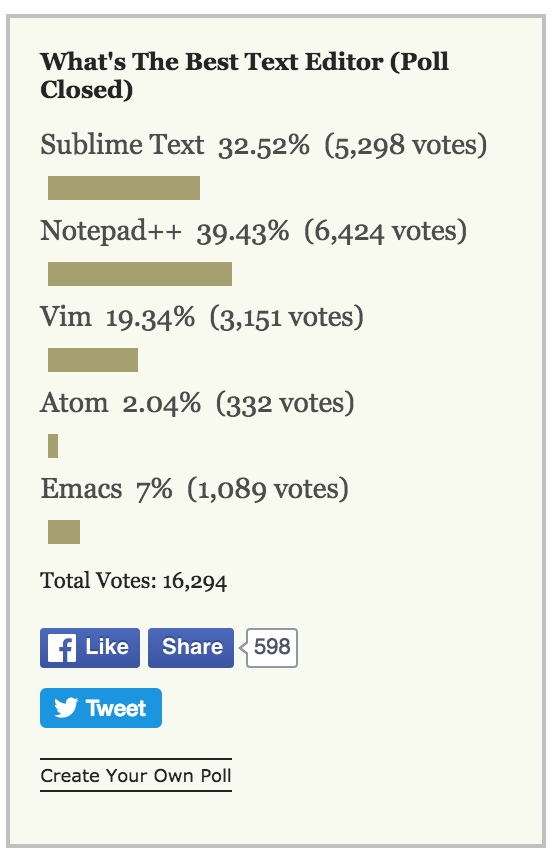

Overview
This course is designed to give an overview of HTML & CSS. There are 6 lessons:
- Lesson 0: Using a Text Editor
- Lesson 1: Intro to the Web
- Lesson 2: Intro to HTML
- Lesson 3: Advanced HTML Tags
- Lesson 4: Intro to CSS
- Lesson 5: CSS Layout
- Lesson 6: Creating a Web Presence
Prerequisite
The students should be familiar with the web as a user, but do not need to have any programming or markup language experience.
Materials
Each lesson includes:
- Slides: An HTML5-based slideset (not a PowerPoint) which actually embeds the actual HTML tags being described in order to better demonstrate them.
- In-class example: An example of what the teacher should build up during the course of the lesson, switching between talking over the slides and demonstrating the concepts in the example page.
- Exercise(s): These can be started in class and then continued outside of it, and the teacher can decide when to reveal the solution for the exercises. For the most part, the solution to an exercise serves as the starting point for the next exercise.
- Additional Reading: Links that teachers can recommend students read after a lesson.
- Related Resources: Slides or tutorials that were useful in the creation of the lesson content. Teachers can visit these to get an idea of how other people present the content.
- Room for Improvement: A list of ways that the particular lesson might be improved.
The materials from the above lessons(slides, examples, exercises) can be downloaded in this zip file.
Related Resources
The content for the slides was based on consultation with a number of fantastic online resources, including the HTML5 specification, WASP Interact Curriculum, and the Opera Web Standards Curriculum. Those are recommended reading for teachers of this course.
History
This course was designed and given by Pamela Fox in October 2010 as part of GirlDevelopIt in Sydney, Australia. The course was delivered as 5 2-hour evening classes over a 2.5 week period (Monday, Wednesday, Monday, Wednesday, Monday), with lesson 1 & 2 bundled into the first class. The students were women from ages 18-50 from a range of disciplines (photography, marketing, travel, ads).
If you are using this material and have questions/comments, feel free to leave them here or on the individual lesson pages.
Lesson 0: Using a Text Editor
Popular Text Editors
Sublime Text Editor cool shortcuts
- option + command + 2 = opens two side-by-side tabs
- command + d = searches the entire file for the same word(s)
- command + ] = indents right
- command + [ = indents left
Lesson 1: Intro to the Web
Topics:
Browsers, Clients, FTP
Materials:
- Slides
- Exercise - This exercise will need to be modified to reflect the FTP details for the students, or removed if there is no FTP access.
Additional Reading:
Room for Improvement:
- Add a slide explaining FTP more, like what information you have to know in order to FTP (host, port, auth).
- Consider mentioning SSH.
Lesson 2: Intro to HTML
Topics:
HTML History, HTML tag syntax, Basic HTML tags
Materials:
Additional Reading:
Room for Improvement:
- Mention best practices for HTML style - using quotes, pressing enter, indenting levels.
- Consider removing TextEdit from list of editors, as it has a tendency to not save in plain text (and confuse students greatly).
- Show how to debug HTML in Firebug and Chrome developer console (element/DOM tab).
- Consider adding a slide about the difference between XML and HTML (particularly if the students had prior exposure to XHTML - as they will be confused about the different best practices).
- Add mention of additional
Aattributes,target(use scarcely!) andname. - Re-iterate that the
titleelement goes in theheadand is not rendered on the page (this seems a matter of great confusion for newbies). - Consider talking about the HTML as a tree structure (DOM).
Lesson 3: HTML Advanced Tags
Topics:
Tables, Forms, Iframes, Embedded Objects, Video, Audio
Materials:
Additional Reading:
Room for Improvement:
- Possibly include a bit more information (a diagram?) on form->server interaction, and why the
nameattribute is important for a database-driven system. - Consider splitting into two talks or shortening the media section, as this slideset takes longer to talk over than the others.
- To make the media part more interesting, talk about the use of some psychoacoustic tricks that improve compression.
Lesson 4: Intro to CSS
Topics:
CSS Properties, Selectors
Materials:
Additional Reading:
Room for Improvement:
- Explain how hexadecimal numbers work, and the 0-255 color space.
- Explain the "cascading" of rules better/more.
Lesson 5: CSS Layout
Topics:
Block elements, Overflow, Box Model, Float, Positioning
Materials:
- Slides
- In-Class Example
- Exercise #1: Grouping and Solution
- Exercise #2: Box Model and Solution
- Exercise #3: Layout and Solution
- Final Assignment
Additional Reading
Related Resources
Room for Improvement
- Consider adding border-radius as an example of a new CSS3 rule.
- Consider explaining negative margins.
- Add a link to YUI Grids Builder and similar tools.
Lesson 6: Creating a Web Presence
Topics:
Domain Registration, Server Hosting Options
Materials:
Related Resources:
- Wikipedia: Web hosting service
- Slides: How to choose your domain name
- Slides: Purchase your domain name
- Slides: Anatomy of a URL
- Slides: What you need to know about domain names
- Slides: Factors to consider when registering a domain name
Room for Improvement:
- Create an explanatory slide about what a web hosting provider is (someone that provides space on their own servers). Perhaps include a diagram.
- Break the hosting provider types slide into one slide for each, perhaps with diagrams.
- Mention using whois to find out who owns a domain.
- Describe what happens when domains expire.